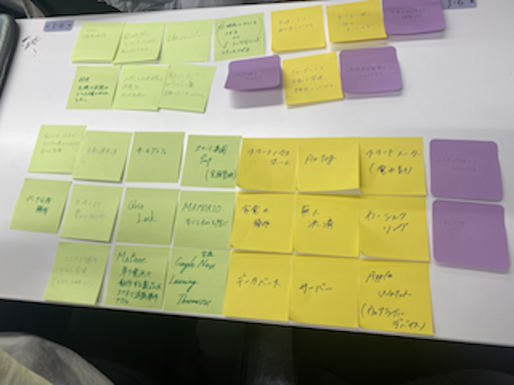
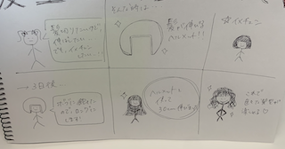

IoT
IoTとは
IoTとは、"Internet of Things"の略称で、様々な物やデバイスがインターネットに接続され、相互に情報をやり取りすることで、自動化や制御を可能にする技術のことを指す。
例えば、スマートホームのような家庭用のIoTデバイスは、センサーやカメラ、音声認識機能などを備え、ユーザーがスマートフォンやタブレットなどの端末からリモートで制御できるようになっている。
また、産業用途では、IoTを用いた製造ラインの自動化や物流管理、医療現場での健康管理など、様々な分野で利用されている。
IoT技術によって、データ収集や解析が可能になり、それによって効率的な業務プロセスの実現や新たなビジネスモデルの創造が可能になるとされている。
ChatGPT参照
IoTで何ができるか
ポストイット

スケッチ
